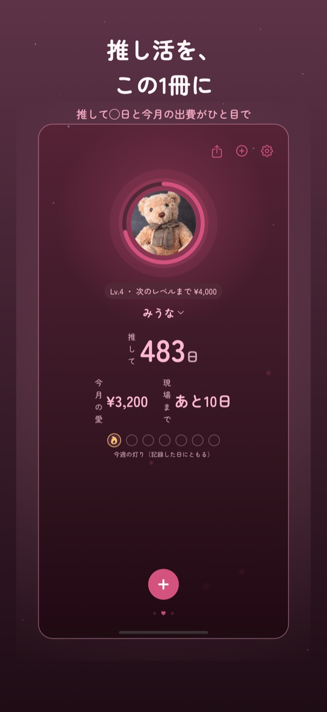
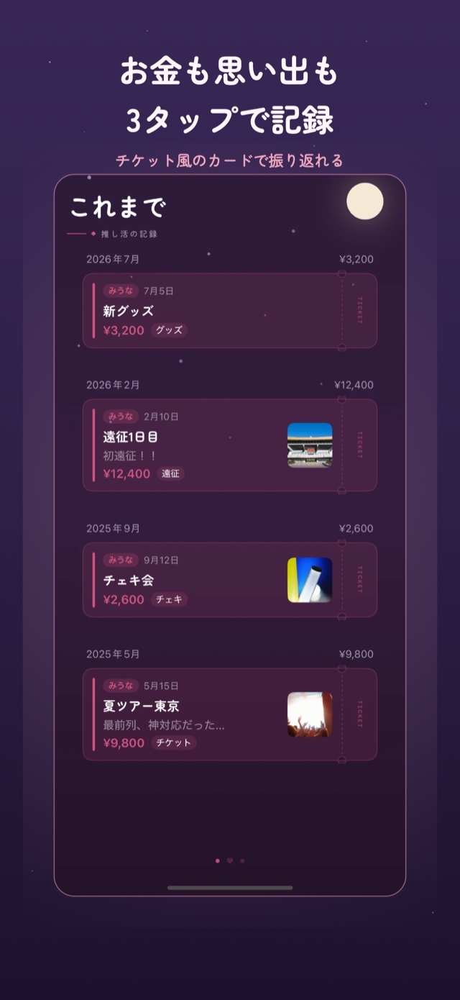
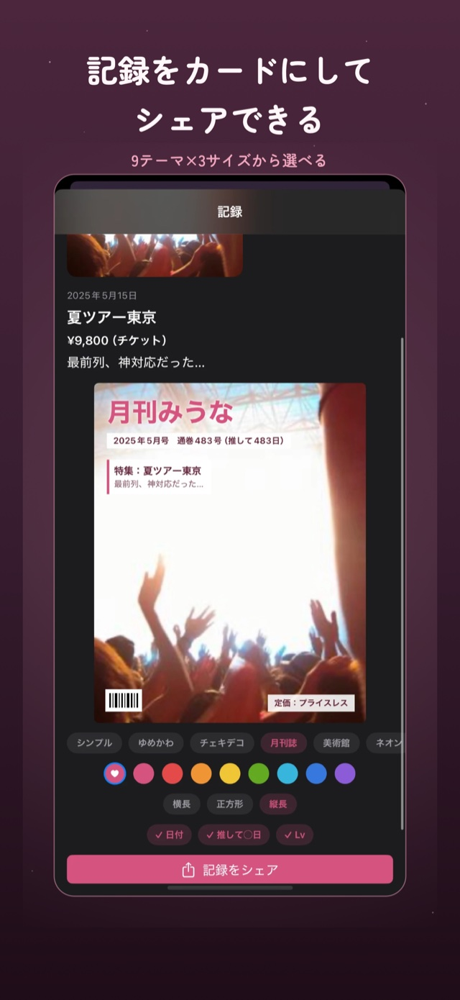
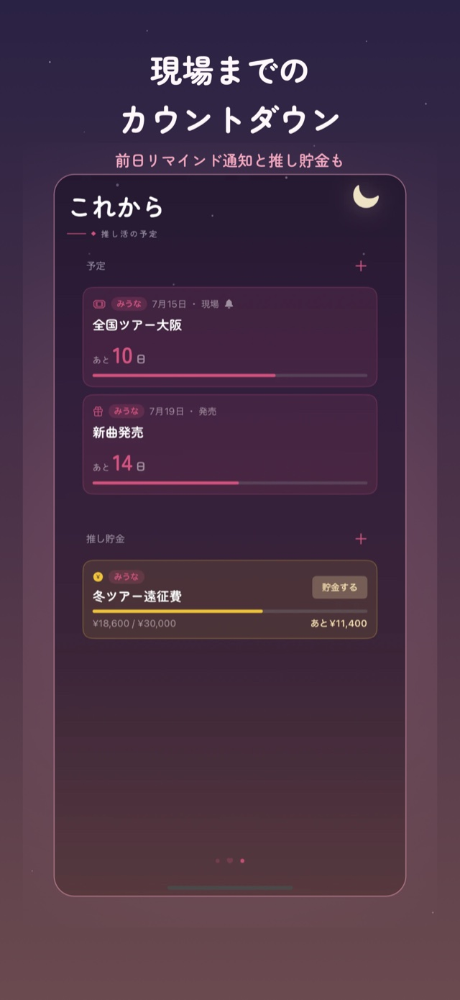
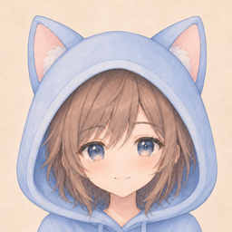

推しの写真に後光リング。「推して◯日」「今月の愛」「現場まであと◯日」がひと目でわかって、記録するたび灯りがともる。
金額も写真も感想も、3タップでさっと記録。チケット半券風のカードが並ぶ年表に。9種類のテーマでカード化してSNSへシェアも。
現場・発売日・締切のカウントダウンと前日リマインド。「ツアーまでに3万円」の推し貯金で、次の現場にそなえよう。




← 横にスワイプできます

AIを使ってiPhoneアプリを作っている個人開発者。自分は推し活の記録を何も残さなかった側なので、ちゃんと残したい人のための手帳を作りました。開発の裏側やAI活用もゆるく発信中。